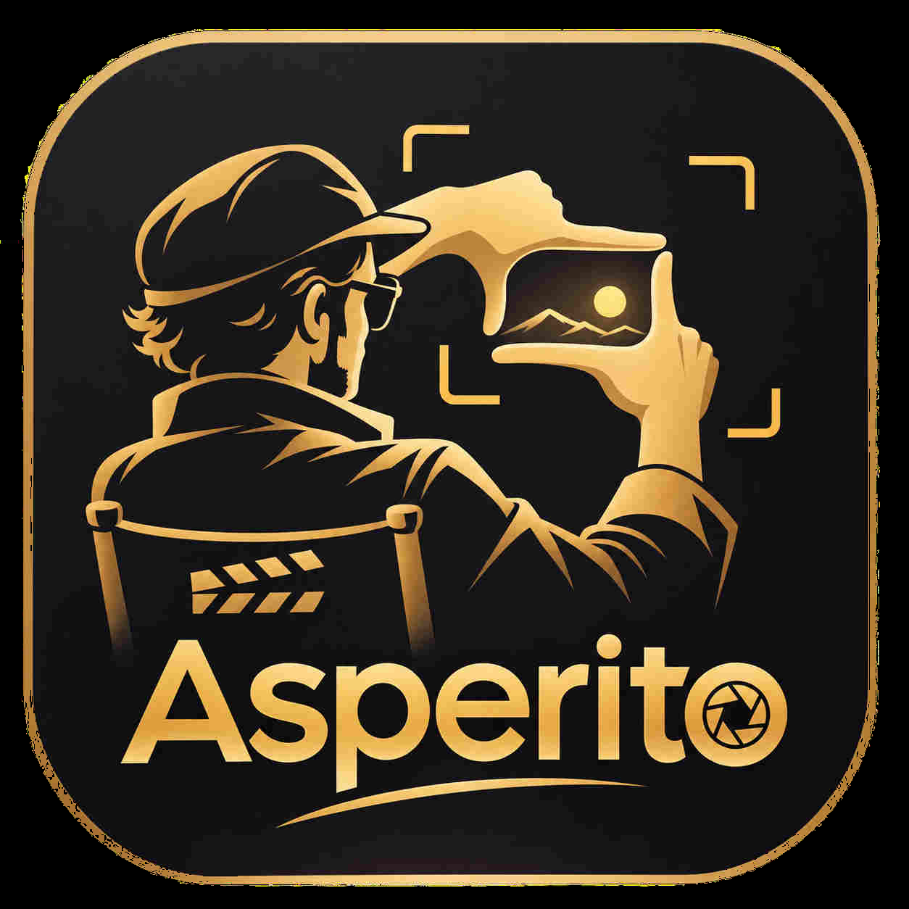

01 / FRAME
Focus on what matters.
A distraction-free viewfinder. A thoughtful set of tools. Your eye does the rest.

Meet Asperito. A cinematic camera with a quieter interface, eighteen composition guides, and a viewfinder that lets the scene take center stage.


The director's simple framing gesture inspired Asperito. Before there is a photograph, there is a moment of intention. Find your composition, trust your eye, and capture what matters.
COMPOSE. LEARN. CAPTURE.Every great photograph is a choice. Find balance, create movement, chase symmetry—or break the rules with intention.
Swipe across the preview, or use the arrows to explore all 18 guides.
Your composition should follow your imagination. Place two fingers on the live viewfinder and twist. The gold guide turns smoothly while the scene—and your final photograph—stay exactly where they are.
Recorded directly from the running Asperito iPhone Simulator app. This shows the in-camera tutorial animation; actual two-finger touch response and haptics still require a physical iPhone.
Designed to stay out of the picture—and give you everything you need to create it.
A distraction-free viewfinder. A thoughtful set of tools. Your eye does the rest.
Simple, offline lessons turn every guide into a new creative instinct.

Pick your guide, change its color and opacity, and experiment with your own grid.

Compose with intention. Capture a clean original image. No account or cloud uploads required.
A look inside the real Asperito iPhone app. Swipe to explore.


Asperito for iPhone. Built with care, created for curiosity.
Explore on GitHub TestFlight distribution is being prepared. This is a product preview, not an App Store download link.